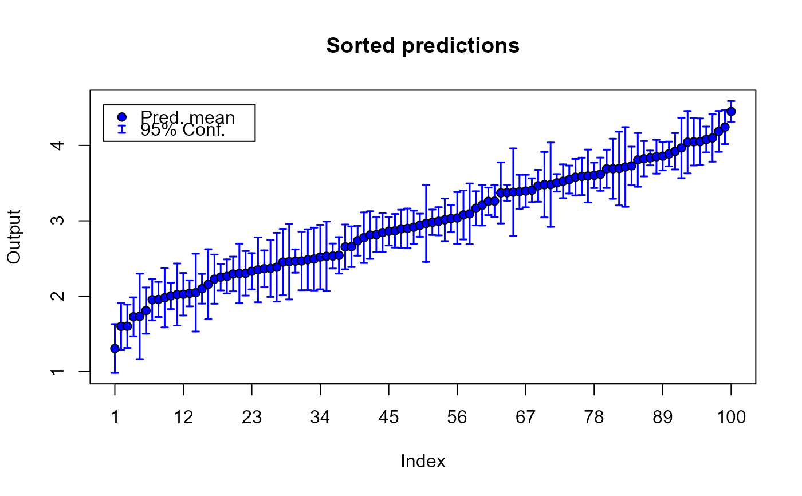
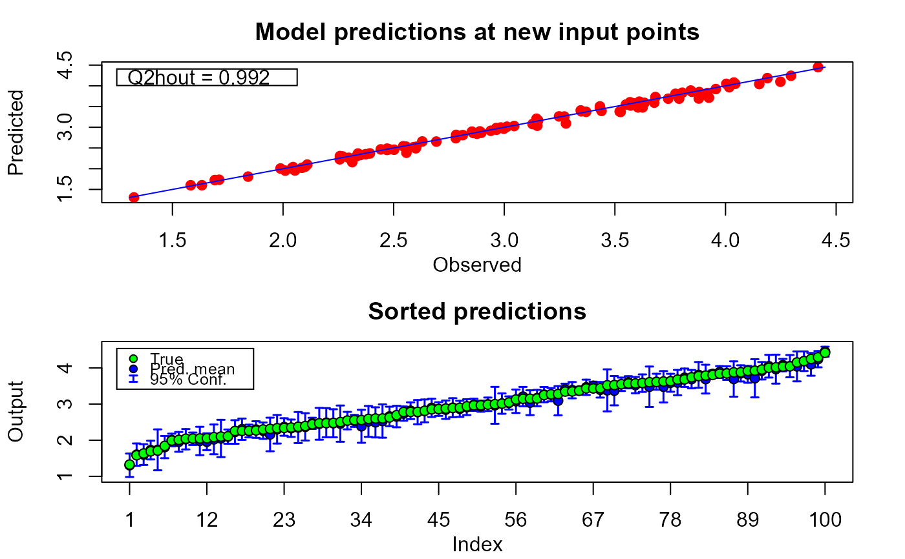
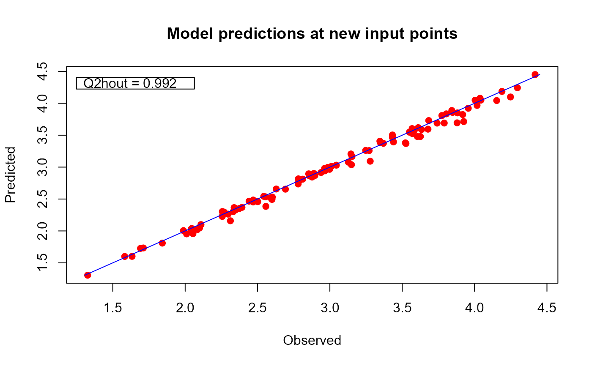
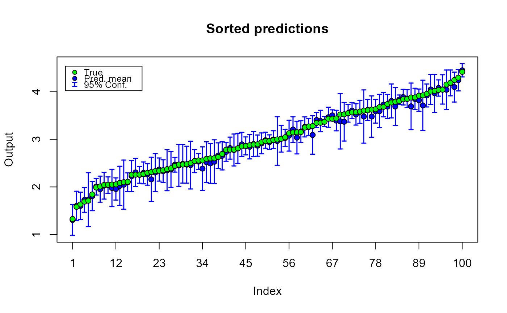

fgpm modelR/7_plottingFunctionsStandard.R
plot.predict.fgpm.RdThis method displays the predicted output values delivered by a funGp Gaussian process model.
# S3 method for predict.fgpm
plot(x, y = NULL, sOut.pr = NULL, calib = TRUE, sortp = TRUE, ...)An object with S3 class "predict.fgpm". This is a
list containing the predictions and confidence bands as
created by predict,fgpm-method for the S3 class
"fgpm".
An optional vector (or 1-column matrix) containing the true values of the scalar output at the prediction points. If provided, the method will display two figures: (i) a calibration plot with true vs predicted output values, and (ii) a plot including the true and predicted output along with the confidence bands, sorted according to the increasing order of the true output. If not provided, only the second plot will be made, and the predictions will be arranged according to the increasing order of the predicted output.
Alias of y, used for compatibility reasons.
An optional boolean indicating if the calibration
plot should be displayed. Ignored if sOut.pr is not
provided. Default is TRUE.
An optional boolean indicating if the plot of sorted output should be displayed. Default is TRUE.
Additional arguments affecting the display. Since this method allows to generate two plots from a single function call, the extra arguments for each plot should be included in a list. For the calibration plot, the list should be called calib.gpars. For the plot of the output in increasing order, the list should be called sortp.gpars. The following typical graphics parameters are valid entries of both lists: xlim, ylim, xlab, ylab, main. The boolean argument legends can also be included in any of the two lists in order to control the display of legends in the corresponding plot.
* fgpm for the construction of funGp models;
* plot,fgpm-method for model diagnostic plots;
* simulate,fgpm-method for simulations based on a funGp model;
* plot.simulate.fgpm for simulation plots.
# plotting predictions without the true output values_______________________
# building the model
set.seed(100)
n.tr <- 25
sIn <- expand.grid(x1 = seq(0, 1, length = sqrt(n.tr)),
x2 = seq(0, 1, length = sqrt(n.tr)))
fIn <- list(f1 = matrix(runif(n.tr * 10), ncol = 10),
f2 = matrix(runif(n.tr * 22), ncol = 22))
sOut <- fgp_BB3(sIn, fIn, n.tr)
m1 <- fgpm(sIn = sIn, fIn = fIn, sOut = sOut)
#> ** Presampling...
#> ** Optimising hyperparameters...
#> final value 2.841058
#> converged
#> The function value is the negated log-likelihood
#> ** Hyperparameters done!
# making predictions
n.pr <- 100
sIn.pr <- as.matrix(expand.grid(x1 = seq(0,1,length = sqrt(n.pr)),
x2 = seq(0,1,length = sqrt(n.pr))))
fIn.pr <- list(f1 = matrix(runif(n.pr * 10), ncol = 10),
f2 = matrix(runif(n.pr * 22), ncol = 22))
m1.preds <- predict(m1, sIn.pr = sIn.pr, fIn.pr = fIn.pr)
# plotting predictions
plot(m1.preds)

# plotting predictions and true output values_______________________________
# building the model
set.seed(100)
n.tr <- 25
sIn <- expand.grid(x1 = seq(0, 1, length = sqrt(n.tr)),
x2 = seq(0, 1, length = sqrt(n.tr)))
fIn <- list(f1 = matrix(runif(n.tr * 10), ncol = 10),
f2 = matrix(runif(n.tr * 22), ncol = 22))
sOut <- fgp_BB3(sIn, fIn, n.tr)
m1 <- fgpm(sIn = sIn, fIn = fIn, sOut = sOut)
#> ** Presampling...
#> ** Optimising hyperparameters...
#> final value 2.841058
#> converged
#> The function value is the negated log-likelihood
#> ** Hyperparameters done!
# making predictions
n.pr <- 100
sIn.pr <- as.matrix(expand.grid(x1 = seq(0,1,length = sqrt(n.pr)),
x2 = seq(0,1,length = sqrt(n.pr))))
fIn.pr <- list(f1 = matrix(runif(n.pr*10), ncol = 10),
f2 = matrix(runif(n.pr*22), ncol = 22))
m1.preds <- predict(m1, sIn.pr = sIn.pr, fIn.pr = fIn.pr)
# generating output data for validation
sOut.pr <- fgp_BB3(sIn.pr, fIn.pr, n.pr)
# plotting predictions. Note that the 2-nd argument is the output, 'y'
plot(m1.preds, sOut.pr)

# only calibration plot
plot(m1.preds, sOut.pr = sOut.pr, sortp = FALSE)

# only sorted output plot
plot(m1.preds, sOut.pr = sOut.pr, calib = FALSE)
